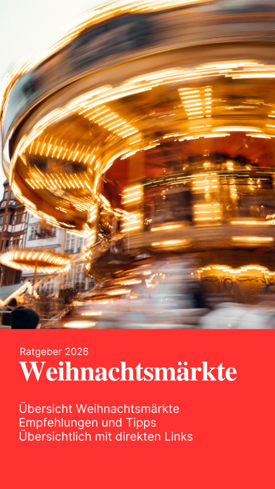

Wir sind Nadine und Sebastian von LocationTV. Wir haben die Weihnachtsmärkte zwischen Rüdesheim und Bad Wimpfen selbst besucht und alles für euch in einem Guide gesammelt: zehn Märkte von Rüdesheim, Wiesbaden und Frankfurt über Bensheim, Worms, Alzey und Mannheim bis Speyer, Deidesheim und Bad Wimpfen, dazu ein Extra zum Nürnberger Christkindlesmarkt.
Zu jedem Markt findet ihr die Termine und Öffnungszeiten 2026, unsere persönlichen Highlights, Fundstücke und Tipps, was ihr nicht verpassen solltet, und direkte Links zu den offiziellen Seiten. So spart ihr euch die Recherche und wisst vorher, welcher Markt zu euch passt, ob für ein Date, einen Familienausflug oder einen schnellen Glühwein nach Feierabend.
42 Seiten als PDF · ehrlich, persönlich und mit vielen eigenen Fotos · 20 €
Hier findet ihr alle Weihnachtsmärkte aus unserem Guide mit den Terminen für 2026. Wir haben jeden dieser Märkte selbst besucht. Im Guide erfahrt ihr zu jedem Markt die Öffnungszeiten, unsere Highlights und Tipps, was sich wirklich lohnt.
19. November bis 23. Dezember 2026, täglich geöffnet. Über 100 Stände mit Händlern aus mehr als 20 Nationen, mitten in der Altstadt rund um die Drosselgasse.
24. November bis 23. Dezember 2026. Dazu der Kindersternschnuppenmarkt auf dem Luisenplatz vom 24. November bis 30. Dezember 2026.
23. November bis 22. Dezember 2026, rund um Römerberg und Paulsplatz. Dazu der City Christmas Market über den Dächern der Stadt vom 5. November bis 23. Dezember 2026.
26. November bis 22. Dezember 2026, täglich.
20. November bis 23. Dezember 2026, täglich 11 bis 20 Uhr. Highlight ist das Turmblasen am 4. Advent, Sonntag, 20. Dezember 2026, ab 18 Uhr.
Pre-Opening am 20. und 21. November 2026, dann 23. November bis 23. Dezember und 27. bis 30. Dezember 2026.
23. November bis 23. Dezember 2026, täglich 11 bis 21 Uhr. Weihnachtsmarkt am Wasserturm, Märchenwald am Paradeplatz und der Besondere Weihnachtsmarkt auf den Kapuzinerplanken.
23. November 2026 bis 10. Januar 2027, rund um den Kaiserdom und die Maximilianstraße.
27. November bis 20. Dezember 2026, an allen vier Adventswochenenden von Freitag bis Sonntag.
Nur an den ersten drei Adventswochenenden: 27. bis 29. November, 4. bis 6. Dezember und 11. bis 13. Dezember 2026. Einer der ältesten Weihnachtsmärkte Deutschlands.
27. November bis 24. Dezember 2026, täglich 10 bis 21 Uhr.
Alle Details, Öffnungszeiten und unsere persönlichen Tipps findet ihr im Weihnachtsmarkt-Guide 2026 als PDF für 20 €.
Neben dem Guide drehen wir auch Reisefilme von unseren Weihnachtsmarkt-Besuchen. Mit dem iPhone 15 Pro halten wir Atmosphäre, Lichter, Menschen und Highlights fest – authentisch und nah dran.
Ihr findet bei uns Filme aus dem vergangenen Jahr 2025 und aus der Saison 2026. Die Filme zeigen die Märkte so, wie wir sie erlebt haben: verwinkelte Gassen, Glühwein, Kunsthandwerk und das besondere Flair der Region zwischen Rüdesheim und Bad Wimpfen.
Unsere Reisefilme:
Auch diese Filme könnt ihr bei uns erwerben. Schreibt uns einfach an eschenfelder.office@gmail.com.